Thuisscherm
Eerste display
U kunt kiezen om OpenCPN aan het einde van de installatie te starten. Als het programma nu niet direct wordt gestart. Je krijgt een scherm als deze:

Besturingsgebieden worden weergegeven op het scherm. Veel van de opties zullen later worden uitgelegd. De focus in deze handleiding zijn de benodigde opties zijn voor een basisgebruik.
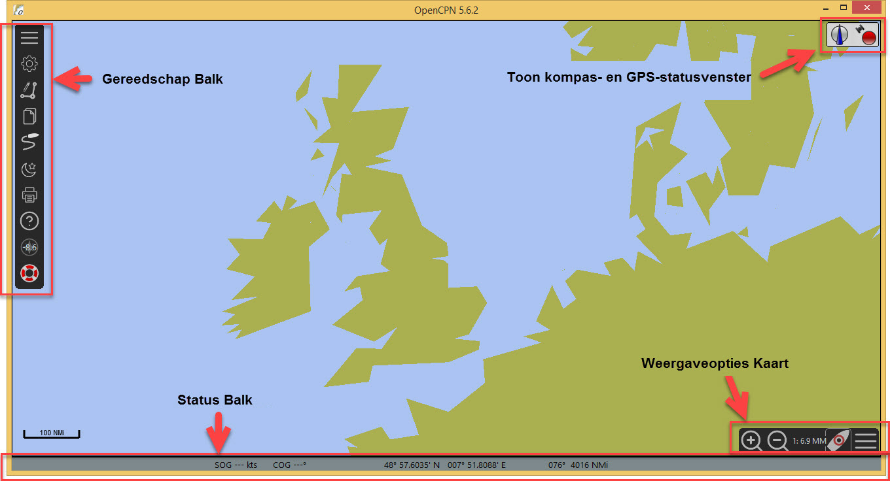
-
Gereedschap Balk
Hamburger 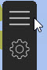 Klikken op de werkbalk 'hamburger' symbool maakt de werkbalk groter of kleiner.
-
Weergaveopties Kaart
Hamburger 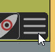 Het kaart paneel 'hamburger' open/sluit het venster om een aantal opties weer te geven.
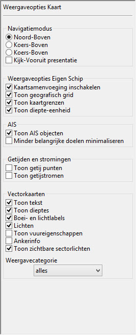
-
Toon kompas- en GPS-statusvenster
-
Status Balk
|
Binnenland ECDIS instellingen
Het is belangrijk dat het beeldscherm is ingesteld zoals beschreven in het volgende onderdeel. |
Inland ECDIS specifieke instellingen
Opties  Gebruikersinterface 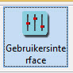
Gebruikersinterface 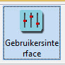
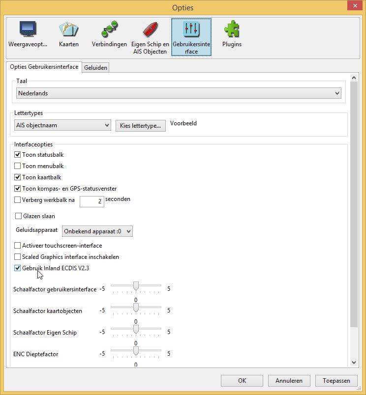
Vink de box aan voor het Gebruik Inland ECDIS.
Toepassen OK
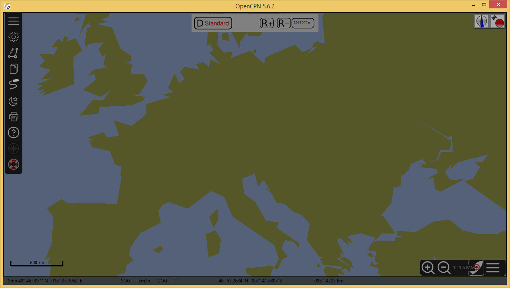
Het scherm is veranderd in het kleurenschema 'duister'.
Om terug te keren naar het 'daglicht'-schema Wijzig kleurenschema De snelkoppeling is F5 op het toetsenbord. Dit schakelt door de nacht, zonsondergang en kleurenschema’s voor daglicht.
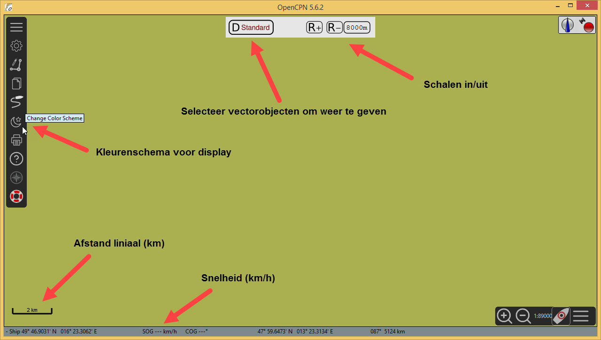
Snelheden en afstanden worden aangeduid in kilometer per uur of in kilometers wanneer in iECDIS modus
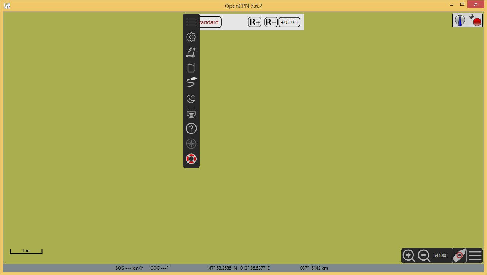
Elke keer dat OpenCPN wordt gestart wordt de standaardweergave "duister" gebruikt. het kleurenschema moet daar na mogelijk worden gewijzigd. Dit is om verblinding te voorkomen. Als de werkbalk moet bewegen, kan dat door deze naar de zijkant van het scherm te slepen.
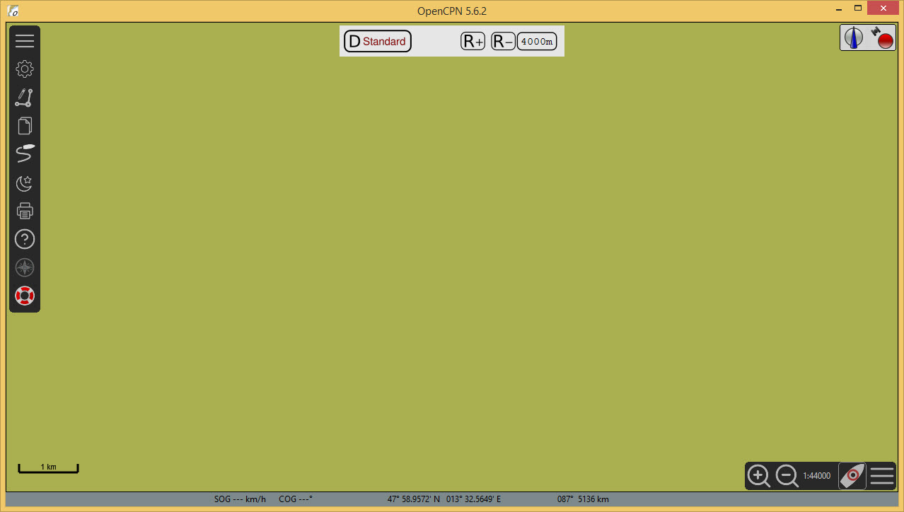